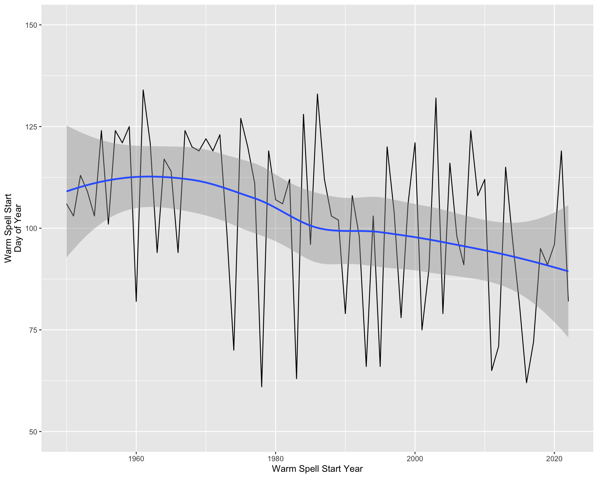

The AOI package can be used to easily define a custom area of interest. We will use the AOI::aoi_get() function to get the boundary for Washoe county, and save it as an object in R. Then, we will create a simple web map using the mapview::mapview() function.
washoe <- AOI::aoi_get(state ="NV", county ="Washoe" )mapview::mapview(washoe,label ="name")
Area of Interest
There are many other ways to specify areas of interest, including:
Points
AOI::geocode('University of Nevada, Reno', pt =TRUE) %>% mapview::mapview(label ="request")
Area of Interest
There are many other ways to specify areas of interest, including:
Coyote Willow, or hímu in the Washoe language, is essential for traditional Washoe basket weaving. Willow needs to be harvested prior to flowering but after the spring thaw in order to be workable for weaving, usually during the first week of above-freezing weather. Washoe artisans had noted to Robin that the timing of that critical period has been changing.
Specifically, Robin wanted to know when the first warm spell (at least 7 consecutive days where the minimum daily temperature rose above 28 ºF, after March 1) has occurred in each year since 1950.
Weather data with rnoaa
Native Climate intern Paige Johnson decided to use daily data from the GHCN to perform the analysis. First she needed to identify a nearby GHCN station to use in the analysis.
Here, we use the rnoaa::ghcnd_stations() function to retrieve a catalog of GHCN stations, and identify candidate stations within Douglas County, NV.
# Get the boundary for Douglas County, NVdouglas <- AOI::aoi_get(state ="NV", county ="Douglas" )# Get the GHCN station inventorydouglas_stations <- rnoaa::ghcnd_stations() %>%# Filter for stations that report minimum temperature dplyr::filter(element =="TMIN") %>%# Convert into a spatial object sf::st_as_sf(coords =c("longitude", "latitude"),crs ="WGS84") %>%# Find stations within Douglas County sf::st_intersection(douglas)mapview::mapview(douglas_stations,label ="name")
Weather data with rnoaa
We decided to use the station from Minden, NV, which had a long, relatively complete record and was within the Washoe Reservation. We use the rnoaa::meteo_tidy_ghcnd() function, which cleans the GHCN data into a tidy format.
# Get the daily temperature data for Minden, NVghcn_minden <- rnoaa::meteo_tidy_ghcnd("USC00265191",var ="tmin") %>%# add missing days to the dataset dplyr::full_join(., tibble::tibble(date =seq(min(.$date), max(.$date),"1 day")),by ="date" ) %>%# Make sure the table is sorted by date dplyr::arrange(date) %>%# "mutate" performs operations on variables, # and creates new ones dplyr::mutate(# tmin in GHCN are in tenths of ºC# Set units, then convert to degrees Ftmin = units::set_units(tmin /10, "deg_C") %>% units::set_units("deg_F"),# Identify days where the minimum temperature is > 28ºF`> 28F`= tmin > units::set_units(28, "deg_F"),# disqualify missing data `> 28F`=ifelse(is.na(`> 28F`), FALSE, `> 28F`) )ghcn_minden %>% dplyr::select(date, tmin, `> 28F` ) %>% dplyr::filter(date >="1950-03-01") %>%head(10) %>% knitr::kable()
date
tmin
> 28F
1950-03-01
19.94 [deg_F]
FALSE
1950-03-02
24.08 [deg_F]
FALSE
1950-03-03
21.92 [deg_F]
FALSE
1950-03-04
26.96 [deg_F]
FALSE
1950-03-05
37.04 [deg_F]
TRUE
1950-03-06
21.92 [deg_F]
FALSE
1950-03-07
14.00 [deg_F]
FALSE
1950-03-08
24.08 [deg_F]
FALSE
1950-03-09
21.92 [deg_F]
FALSE
1950-03-10
17.96 [deg_F]
FALSE
Weather data with rnoaa
Now that we have the data in shape, it is time to identify the warm spells. Here, we develop an algorithm to do so (you can peruse the comments later) and then plot the data from 1950 to today.
ghcn_minden_warm_spells <- ghcn_minden %>%# Calculate Warm Spell Start as the first day with a TMIN greater than 28F# Calculate Warm Spell End as the last consecutive day with TMIN greater than 28F dplyr::mutate(`Warm Spell Start`=as.logical(c(1, diff(`> 28F`) ==1)),`Warm Spell End`=c(diff(`> 28F`), -1) ==-1) %>%# Make a subset of data for Warm Spell Start and Warm Spell End dplyr::filter(`Warm Spell Start`|`Warm Spell End`) %$%# Create a new dataset that includes Warm Spell Start and End dates tibble::tibble(`Warm Spell Start`= date[`Warm Spell Start`],`Warm Spell End`= date[`Warm Spell End`][1:length(`Warm Spell Start`)]) %>%# Show year and day of year for the Warm Spell Start# Show day of year for Warm Spell End # Determine the number of days between Warm Spell Start and Warm Spell End# Add 1 to this value to get the correct number dplyr::mutate(`Warm Spell Start Year`= lubridate::year(`Warm Spell Start`),`Warm Spell Start DOY`= lubridate::yday(`Warm Spell Start`),`Warm Spell End DOY`= lubridate::yday(`Warm Spell End`),Length = (`Warm Spell End`-`Warm Spell Start`) +1) %>% dplyr::filter(# Get periods of longer than a week Length >=7,# That occur after March 1 lubridate::month(`Warm Spell Start`) >=3) %>% dplyr::group_by(`Warm Spell Start Year`) %>%# Get the first warm spell of each year dplyr::filter(`Warm Spell Start`==min(`Warm Spell Start`))ghcn_minden_warm_spells %>% dplyr::select(Year =`Warm Spell Start Year`,`Start DOY`=`Warm Spell Start DOY`,`End DOY`=`Warm Spell End DOY`,Duration = Length ) %>% dplyr::filter(Year >=1950) %>%head(10) %>% knitr::kable()
Year
Start DOY
End DOY
Duration
1950
106
118
13 days
1951
103
119
17 days
1952
113
124
12 days
1953
109
121
13 days
1954
103
120
18 days
1955
124
144
21 days
1956
101
118
18 days
1957
124
276
153 days
1958
121
266
146 days
1959
125
257
133 days
Weather data with rnoaa
Now that we have the data in shape, it is time to identify the warm spells. Here, we develop an algorithm to do so (you can peruse the comments later) and then plot the data from 1950 to today.
# Find the slope of a linear model regressing the# start of the warm spells on the year.# lm(`Warm Spell Start DOY` ~ `Warm Spell Start Year`,# data = ghcn_minden_warm_spells %>%# dplyr::filter(`Warm Spell Start Year` >= 1950)) %>%# summary()# -0.35 days/year, 3.5 days/decade, or 1 week/20 years# Create a plot that shows the start date of the warm spells# and a loess smooth of ghcn_minden_warm_spells %>%ggplot(aes(x =`Warm Spell Start Year`,y =`Warm Spell Start DOY`)) +geom_line() +geom_smooth(method ="loess") +scale_y_continuous(name ="Warm Spell Start\nDay of Year",limits =c(50, 150)) +scale_x_continuous(limits =c(1950, NA))

Calling APIs (for data you can’t get elsewhere)
Sometimes, there isn’t a good R package for accessing some type of data, but there is an Application Programming Interface (API) that enables querying and retrieving the data. An example is the National Water Information System (NWIS, but see the dataRetrieval package).
Here, we’ll explore the NWIS API, whose documentation are available here:
Our goal is to map all the active stream gauges in Washoe County.
Calling APIs (for data you can’t get elsewhere)
We’ll use the httr2 package, which is a very modern library for making HTTP requests in R. httr2 is very powerful, and we’ll only skim the surface of it here.
Every request starts with a URL, which in this case points to the NWIS API server. The httr2::req_dry_run() function provides some information about what type of request it would perform if you told it to.
Calling APIs (for data you can’t get elsewhere)
We modify URLs by adding queries using the httr2::req_url_query() function. A query consists of a set of parameters to the URL that control what the response is. In this case, looking at the NWIS API documentation, we can see that we are able to specify parameters for county, site type, and site status. We can add those parameters to the request.
We make the request by using the httr2::req_perform() function. We can then view the raw “body” of the response, and parse it using readr::read_tsv().
# Perform the requestwashoe_stream_gauges <- httr2::req_perform(req) %>%# Get the raw body of the response httr2::resp_body_raw() %>%# Parse the response, which is a tsv readr::read_tsv(comment ="#")# Drop the first row, which are the class of the datawashoe_stream_gauges[-1,] %>%# Convert into a spatial object sf::st_as_sf(coords =c("dec_long_va", "dec_lat_va"),crs ="WGS84") %>%mapview::mapview(label ="station_nm")
COGS: Gridded data from the Cloud
PRO TIP: We aren’t going to have time to go through this, but data that are in Cloud-Optimized GeoTiff (COG) format and are stored in the “cloud” (Amazon S3 buckets, for instance) can be loaded into terra directly, and cropped prior to retrieval from the host server. This is a really powerful way to get at cloud-hosted geospatial data.
For example, median June temperature from the NASA NEX-GDDP downscaled CMIP6 climate projections, cropped to Nevada:
terra::rast("https://nex-gddp-cmip6-cog.s3-us-west-2.amazonaws.com/monthly/CMIP6_ensemble_median/tas/tas_month_ensemble-median_ssp585_209906.tif" ) %>%# Crop and mask to Nevada terra::crop(AOI::aoi_get(state ="Nevada"),mask =TRUE) %>%# Convert from K to ºF { (. -273.15) *9/5+32 } %>%plot()